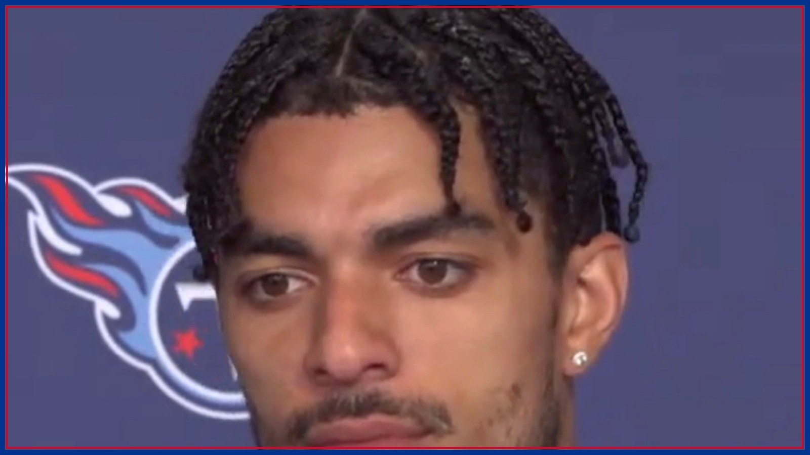

Amani Hooker says he's playing Sunday. Buffalo is still saying day by day.
New Buffalo Bills safety Amani Hooker said Wednesday, per the team's official recap, "Oh, I'm going to play on Sunday" against the Jets. Head coach Joe Brady's answer was day by day. Plus: Dawkins' restructured deal is how the trade fit under the cap, and Wednesday's walk-through report listed six starters limited — and none out.

Amani Hooker has been a Buffalo Bill for one day, and he has already made his first call of the week. Asked Wednesday about Sunday's game at the New York Jets (Nov. 15, 1 PM ET, MetLife Stadium, CBS), the safety Buffalo acquired from Tennessee at Tuesday's trade deadline did not hedge. "Oh, I'm going to play on Sunday," Hooker said, per the Bills' official recap of his first day in Orchard Park. "Yeah, I'll be ready to go." His head coach, in the same building on the same day, chose different words. Head coach Joe Brady left the door open to Hooker suiting up against the Jets, per the same team recap, but the plan he described was a process, not a promise: Buffalo will take it day by day and see how much of defensive coordinator Jim Leonhard's system Hooker can process, and how fast, before asking him to communicate it on the road. The player says Sunday. The team says process. Both can be telling the truth — and the gap between those two sentences is the real story of Jets week.
Start with why Hooker's confidence is not just talk. Wednesday was a walk-through, not a padded practice, and even in that setting his new partner noticed. Safety Cole Bishop, the man Hooker is expected to start next to, said Hooker impressed him with how quickly he picked things up on day one, per the Bills' recap, and framed the whole project the way safeties have to: time on task — reps in the meeting room, tape together, walk-throughs, practices, then games. Hooker made the same point from the other chair, per the team recap: the safeties have to operate with, in his words, one brain, because the big plays a defense gives up usually trace back to a safety miscommunication. That is the actual test this week. It is not whether an eight-year veteran with five interceptions this season — tied for the NFL lead — can play football. It is whether he and Bishop can speak the same language by 1 PM Sunday, in a road stadium, against an offense that has had all week to draw up plays designed to make a brand-new safety pairing talk to each other.
The context makes Buffalo's caution easier to understand, because the defense Hooker is joining does not need rescuing this week. Damar Hamlin has started the past two games next to Bishop following the release of C.J. Gardner-Johnson, per the Democrat and Chronicle, and in those two games Buffalo held Baltimore and Minnesota to a combined 16 points and fewer than 200 total yards in each, per the same reporting. That is the group Hooker would step into — and the group he could disrupt if a call gets crossed on Sunday. The likeliest middle ground, as Buffalowdown and Yardbarker both sketched Wednesday, is that Hooker plays but does not play every snap: a package that grows as the game goes, built on the calls he has proven he owns in practice. General manager Brandon Beane set that expectation on Tuesday, per the Democrat and Chronicle, cautioning that even an intelligent veteran needs time to learn Leonhard's system. Nobody in the building is doubting the player. They are timing the debut.
If you want a measure of how badly Buffalo wanted this player, follow the paperwork — because the trade almost ran out of money before it ran out of time. Per the Democrat and Chronicle's Thursday reporting, the Bills entered deadline day with roughly $3.8 million in cap space, per Spotrac, and Beane realized mid-afternoon Tuesday that he needed to restructure left tackle Dion Dawkins' contract to fit Hooker — while Dawkins was away at a community event. The team tracked him down, converted part of his salary into a signing bonus and created $5.3 million in space, per ESPN's Field Yates via the Democrat and Chronicle, against a 2026 cap hit of $4.47 million for Hooker, per Spotrac figures in the same report. The deal came together shortly after 1 PM, per the same reporting, less than three hours before the deadline. Teams do not chase down their left tackle at a community event for a player they plan to ease in over a month. They do it for a starter. That urgency is the strongest argument that Hooker's Sunday role, whatever its exact size, will be real.
Wednesday's walk-through report added a second, quieter piece of good news: for the first time in weeks, nobody important was out. Per the Bills' official recap, Dawkins (rib) and Alec Anderson (ankle) were both limited after missing the Minnesota win — a step forward from did-not-practice — and cornerback Christian Benford (wrist), tackle Spencer Brown (back), tight end Dalton Kincaid (ankle) and center Connor McGovern (neck) were also limited. Defensive linemen Greg Gaines and T.J. Sanders, guard Ar'maj Reed-Adams, defensive back Jordan Hancock and receiver Tyrell Shavers were all full participants, per the same recap. And per Bills on SI's read of the report, wide receivers DJ Moore and Keon Coleman do not appear on it at all — the red non-contact jerseys of the last two weeks are gone. Now the mandatory honesty: Wednesday was a walk-through, so every one of those designations is an estimate, not a rep count, and Brady himself said Wednesday, per Bills on SI, that he will have a better answer by Friday. Four of five starting offensive linemen limited is still four of five starting offensive linemen on a report. But limited across the board, with zero did-not-practice designations among the starters, is a materially better sheet than the one Buffalo carried into Minnesota week.
The Jets, for their part, may hand Hooker a genuine first test. Wide receiver Garrett Wilson returned to practice Wednesday in a limited capacity after missing the Kansas City loss in the concussion protocol, per the Jets' official injury report and ESPN's Rich Cimini via Yardbarker — limited is not cleared, and Wilson still has protocol steps ahead of him, but his trajectory points toward Sunday. If Wilson plays, and Benford's wrist is still a limited-participation wrist, then Hooker's communication with Bishop stops being a theory sometime in the first quarter, because Geno Smith and Wilson are exactly the kind of pairing that hunts a safety who is a half-step late on a call. If Wilson sits, the debut gets a softer landing. Either way, Buffalo did not trade a second-round pick for a spectator, and its new safety has already told you his expectation out loud.
So the week now has a clock on it. Thursday and Friday's practices are where Hooker either stacks enough of Leonhard's language to earn a full role or settles into a Sunday package, and Friday's final designations plus Sunday's inactives — about 90 minutes before kickoff — remain the last word on him, on Wilson, and on Buffalo's four limited linemen. This desk will not print a player's confidence as a lineup card, and it will not print a walk-through estimate as a verdict. But read the two quotes side by side one more time — the safety who says he is playing, and the coach who says day by day — and understand that they are not arguing. They are describing the same race from opposite ends of it. Hooker's job is to make Brady's caution look silly by Friday. Everything out of his first day in Buffalo says he intends to. Go Bills — and get every Jets-week update, from Friday's designations to Sunday's inactives, in your inbox every morning with The BNC Blitz.
The BNC Blitz is free: the day's Bills news, one stat that matters, and one take, every morning. Join to keep reading — and never miss the end of a story again.